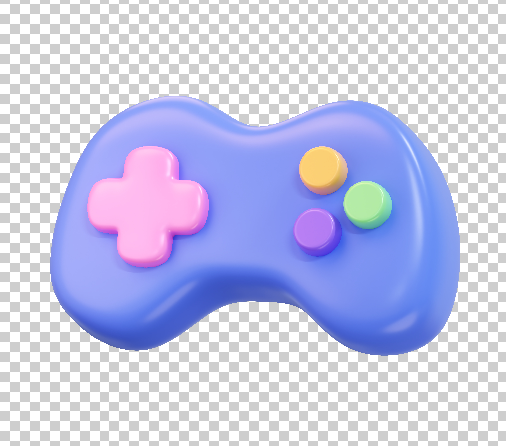

- Title
- Sirve para definir el título de una página web en los resultados de los buscadores.
- Meta
- Sirve para proporcionar información sobre la página web al navegador y a los buscadores y no es contenido visible.
- Head
- Contiene información sobre configuraciones de la web que no se muestren visiblemente
- ul
- Sirve para crear una lista desordenada cuyos elementos aparecen con viñetas en lugar de números y letras
- bgcolor
- Es un elemento que establece el color de fondo de un elemento , una tabla , una fila o una celda
- Font Color
- Cambiar el color de un texto de una página web.
- H1
- Para crear el encabezado y el elemento principal de una página web--.
- Name
- Sirve para dar un nombre a un elemento para que pueda identificarse.
- u
- Subrayar un texto en formato html.
- A Href
- Crea un enlace que permite ir a otra página web , abrir un archivo o acceder a otra parte de la misma página
- Footer
- Sirve para crear el pie de una página web o de una sección de contenido.
- !DOCTYPE html
- Es un elemento que sirve para indicar al navegador que está escrito en HTML5 .
- Type="circle"
- Sirve para poner viñetas circulares sin rellenar en una lista desordenada.
- Align
- Sirve para alinear el texto un elemento dentro de la página web.
- B
- Muestra un texto en negrito en el formato HTML.
- ©
- Es una entidad HTML que representa el símbolo copyright o derechos de autor
- html lang="es"
- Sirve para indicar el idioma en que está escrita la página.
- li
- Define un elemento dentro de una lista.
- img
- Sirve para mostrar una imagen en una página web.
- Ol
- Sirve para crear una lista ordenada cuyos elementos aparecerán con números y letras en lugar de viñetas.